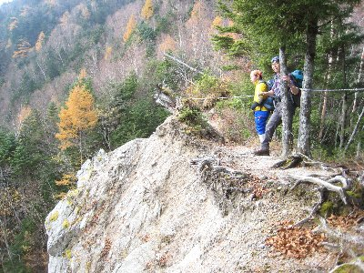
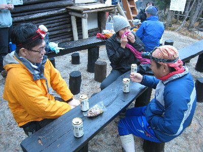
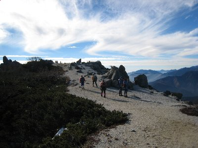
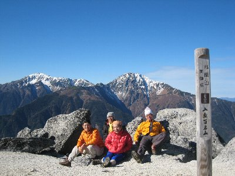
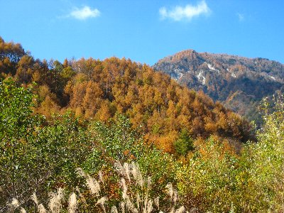

鳳凰三山登山 | 2007年11月 |
|---|---|
鳳凰三山とは、南アルプスの北東部に位置する、地蔵岳、観音岳、薬師岳の三山の総称であり、三山で日本百名山となっている。 標高は3000ｍに届かないものの白い砂の美しさや、そびえ立つ大岩オベリスクが有名で、秋の紅葉時期となると多くの登山客で賑わう場所で、 結構前から行ってみたかった山でもある。 実際の紅葉時期をちょっと外した11月上旬に、Ryuu隊長率いる4人で行ってみました。 因みに二人はベテラン（Ryuu・つくださん）、二人はシロート（ハチ・べっしー）って組み合わせです。特にハチさんは、ハイキングなら数多く行っているが、本格的な山は初めてだそうです。 | |
|  鳳凰小屋への登り（旭岳近辺） |  登山から遠くに富士山が |
| 早朝6時半に、出発地点の御座石鉱泉に到着。現地でつくださんと合流し出発。ここの標高は1060m位。天気は多少の薄い雲が有るものの上々です。地図を見ると出だしから急登と書いてありますが、そこまで厳しい道でもありません。 鹿なのか猿なのか動物の鳴き声も聞こえ、木の上に居る猿も発見しました。 黙々と歩を進め、コースタイム5時間半のところを5時間の昼12時チョイ過ぎには、本日の宿泊所である鳳凰小屋に到着しました。持ってきた弁当と、なぜかバーボン・日本酒がテーブルに並び、昼間から宴会状態です。 | |
 地蔵岳 オベリスクを望む（左奥） |  鳳凰小屋にてビール♪ |
| ちょっと酔いが廻ってきて、既に今日は動く気力がなさそうなRyuu隊長を急き立て、今日のうちに地蔵岳まで行くことにしました。明日の行動時間と、小屋から地蔵岳まで所要時間1時間を考えると、今日行っておけば明日が楽かと思い、行動開始です。まだ13時過ぎだし、暇だし。 荷物を半分以上小屋に残して行ったので、登りも大分楽になりました。 地蔵岳に近づくと地面は砂になるため、足を取られて結構大変です。山の上で砂って言うのも不思議な感じがしますね。山頂にそびえ立つ大岩オベリスクは、さすがに大きく、なぜこんな所に大岩が有るのかも不思議です。 オベリスクに挑戦しましたが、大岩直下で断念。難しい・・・・頑張れば行けそうな気がしないでもないけど、降りるときに怖そうです。 | |
 早朝、観音岳への道（写真見ると凄い所みたい・・・） |  観音岳から薬師岳への天空の道 |
| さて、ひとしきり大岩と戯れて小屋まで下山。夕食はカレーライスでした。この小屋はいつでもカレーらしい。団体さんが居たけど、寝る場所は狭くなくて良かったです。 小屋の夜は早く19時消灯で、本日の疲れを癒します。外はメチャ寒いけど星が綺麗でした。 あさ5時45起床。6時から朝食で6時40分に出発しました。 昨日に地蔵岳に行っているので、そのまま観音岳に向かいます。日は昇っているものの、登山道に太陽が照るには早く、また先日降った雪が多少残る道でした。 尾根沿いに出ると展望が開け、雪を被った北岳・間ノ岳、雲海上に佇む富士山を眺める事が出来ました。ただ、尾根は西からの風が吹いていて寒かったです。 そのまま観音岳まで登り、上で記念写真タイム。360度見渡すことが出来て、遥か北に雪で真っ白な立山連峰（推定）まで見え、八ヶ岳や南アルプス南方の東岳、赤石岳（推定）まで見渡すことが出来ました。 | |
 北岳と間ノ岳 |  ・・・をバックに、薬師岳 |
| 空気が澄んでいるのか霧掛かることも無く、空はとても蒼く、山の連なりを眺めていると、その広さに地図を見ている様な気分になります。 天空の道を歩いているかの様な気分で、薬師岳だけまで歩き、そこで休憩となりました。（薬師岳到着8時45分） 薬師岳山頂は、ちょっとした広場になっているので、山頂でコーヒー集会です。 暖かいコーヒーとリンゴにお菓子を食べ、休憩を挟み9時半に中道コースにて下山開始。薬師岳は標高2780m、車が置いてある御座石鉱泉は標高1060m位。約1700mの下りです〜 (ToT) 中道コースは、樹林帯と笹で構成されていて、景色もあまり望めないところです。足はパンパンになり、膝は痛く、集中力が切れてくると滑って転びそうです。本当に黙々と下り、13時過ぎには青木鉱泉到着。ちょっと遅い昼食です。 | |
 富士山を望む |  青木鉱泉への道すがら |
| 小屋で作ってもらった弁当（1000円）ですが、青木鉱泉まで来られるなら弁当要らなかったかな。弁当は、硬い白米にゆかりが振りかけてあって、漬物がついている程度です。ご飯硬かったな〜 鳳凰小屋より標高が高い北岳山荘で食べたご飯の方が柔らかかったし、お弁当もまともでした。 青木鉱泉から1時間程山を歩いて御座石鉱泉到着です。（15時頃到着） 御座石でお風呂に入ってサッパリしました。御座石のお風呂は、1260円と高価な割りに、洗い場が三つの小さいお風呂でした。まあ、山の中だから仕方ないのか？ しかし、わざわざ車では来ないよね。 今回も天気に恵まれて、とても気持ちのいい登山でした。足は痛くなったけど、「登った〜」という気分にはなれたし、いい景色も見れました。 大変だけど、やっぱり登山って楽しいです。 | |
| 写真＆コメント ｂｙ べっしー | |